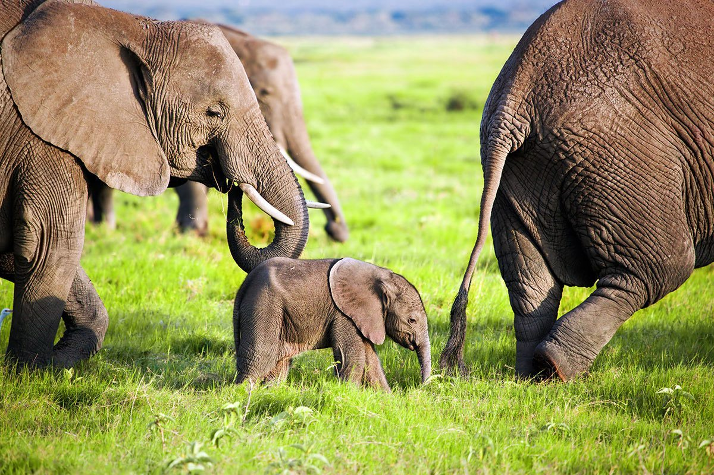
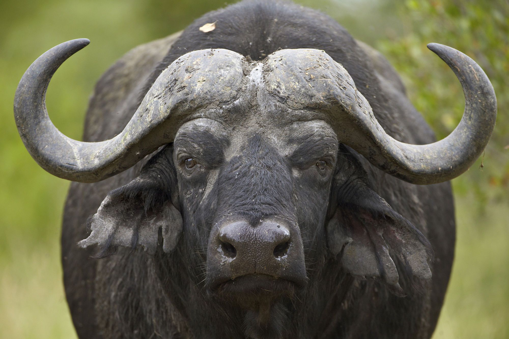
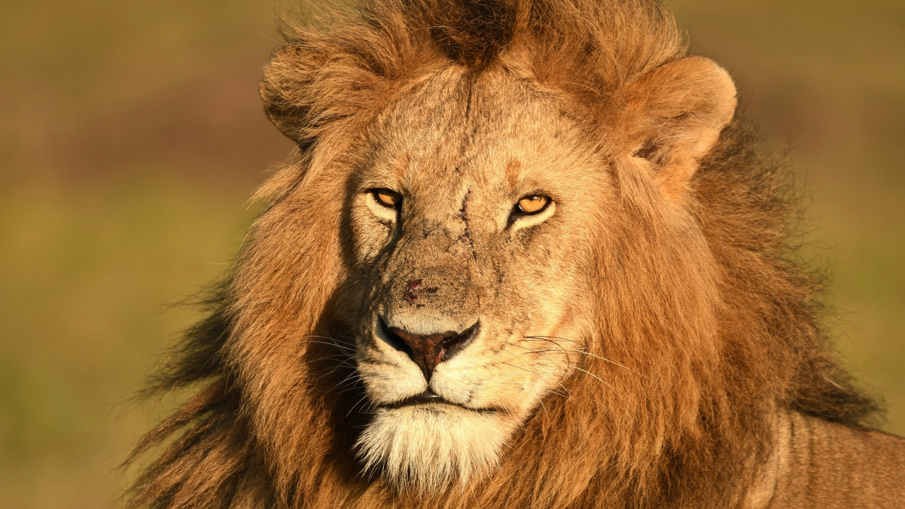
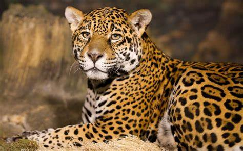
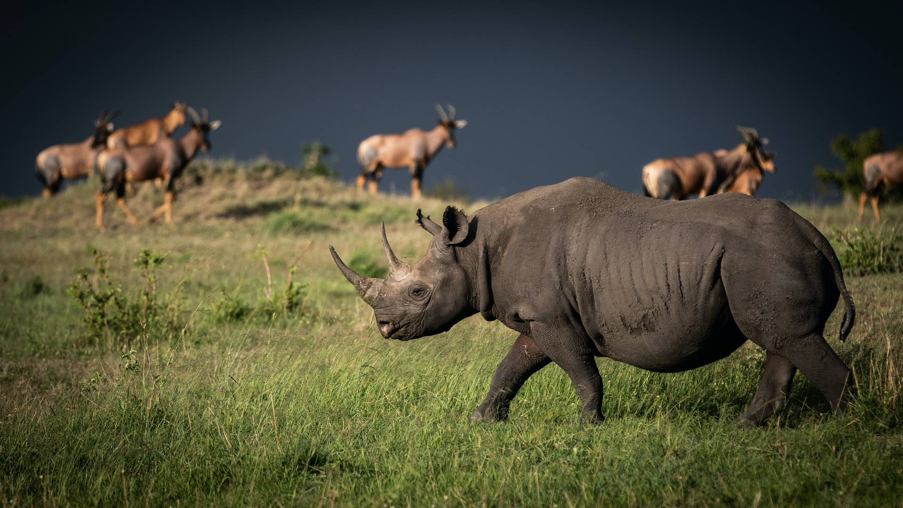

Welcome to the Green Valley Blog!
Explore the fascinating world of wildlife through our articles .
THE BIG FIVE
The term "Big Five" is commonly used in the context of African wildlife to refer to the five most
iconic and recognizable animals found in the continent's savannas and grasslands.
These animals are:
1.African Elephant
2.African Buffalo
3.African Lion
4.African Leopard
5.Black Rhinoceros
These animals are called the "Big Five" because they were historically the most difficult and
dangerous animals to hunt on foot in Africa, due to their size, power, and unpredictable
behavior.
Today, the term is often used in a more positive context to refer to the five most iconic and
sought-after animals for wildlife viewing and photography in African national parks and reserves.
African Elephant:

The African elephant is the largest land mammal on Earth, and one of the most iconic animals in
Kenya.
These majestic creatures can weigh up to 6,000 kilograms and live for up to 70 years.
African elephants are known for their intelligence, social behavior, and complex communication
skills.
They are herbivores, feeding on a diet of grasses, leaves, and fruits.
In Kenya, African elephants can be found in national parks such as Amboseli, Tsavo, and Maasai Mara.
African Buffalo:
The African buffalo, also known as the Cape buffalo, is a large and powerful herbivore that can weigh
up to 900 kilograms.
They are known for their aggressive behavior and sharp horns, which they use to defend themselves
against predators.
African buffalos are social animals, living in large herds that can number in the hundreds.
They are found in many of Kenya's national parks, including Tsavo, Amboseli, and Maasai Mara.
African Lion:
The African lion is the second-largest cat species in the world, after the tiger.
They are powerful hunters, known for their distinctive manes and roars.
African lions live in prides, which are groups of females, their cubs, and a few males.
They are opportunistic predators, feeding on a variety of animals, including zebras, wildebeests,
and buffalos.
African lions can be found in national parks such as Maasai Mara, Tsavo, and Amboseli.
African Leopard:
The African leopard is a solitary and elusive cat species that is known for its agility and strength.
They have a unique coat pattern that helps them blend in with their surroundings, making them
difficult to spot.
African leopards are opportunistic predators, feeding on a variety of animals, including antelopes,
monkeys, and birds.
They are found in many of Kenya's national parks, including Maasai Mara, Tsavo, and Amboseli.
Black Rhino:
the black rhino is a critically endangered species that is native to Africa. They are known for their
distinctive horns, which can grow up to 1 meter in length.
Black rhinos are herbivores, feeding on a diet of leaves, twigs, and bark.
They are also known for their poor eyesight, relying on their sense of smell and hearing to detect
predators.
In Kenya, black rhinos can be found in national parks such as Nairobi National Park, Lake Nakuru
National Park, and Ol Pejeta Conservancy.